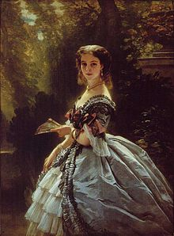
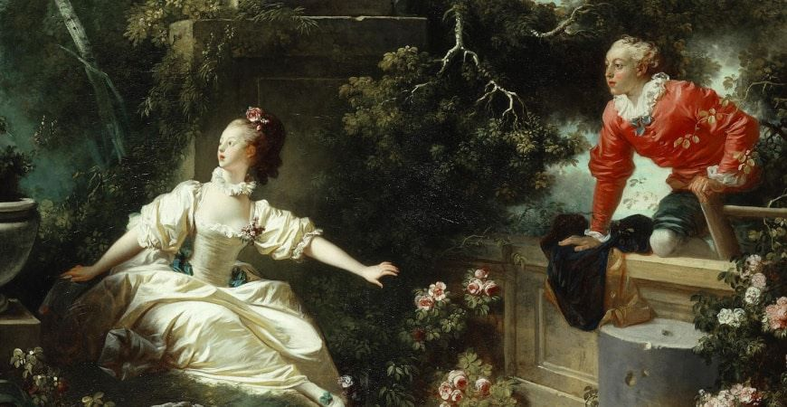
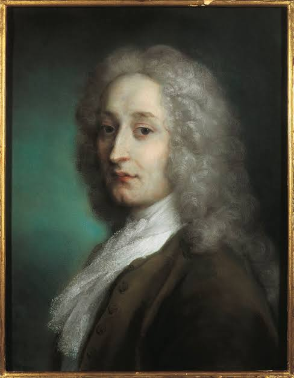
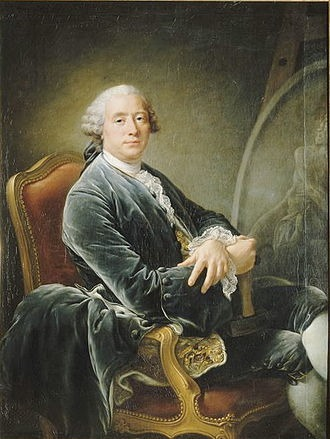
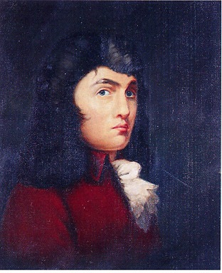

Rococó (1720 - 1770 )
Rococó é um movimento estético surgido na França do século XVIII, no contexto do Iluminismo, e faz a transição entre o barroco e o neoclassicismo. É marcado pela superficialidade, caráter hedonista e ornamental. Também apresenta cores suaves e linhas curvas.

Características do Rococó
Esse estilo opõe-se ao barroco e realiza a transição para o neoclassicismo. Portanto, é aristocrático, valoriza o hedonismo, a ornamentação, e, ao contrário do exagero barroco, privilegia os temas leves e as cores claras. Na arquitetura, há preferência por linhas curvas e simplicidade.
Técnicas utilizdas no Rococó
De origem francesa, a palavra Rococó (rocaille) quer dizer concha, uma associação aos elementos que caracterizam esse estilo. Esse estilo opõe-se ao barroco e realiza a transição para o neoclassicismo. Portanto, é aristocrático, valoriza o hedonismo, a ornamentação, e, ao contrário do exagero barroco, privilegia os temas leves e as cores claras. Na arquitetura, há preferência por linhas curvas e simplicidade. Também é relacionado ao termo “embrechado”, técnica utilizada na decoração de grutas artificiais por meio da incrustação de conchas e fragmentos de vidro.

Artistas
Nome dos principais artistas:
Germain Boffrand (1667-1754): arquiteto francês.
Johann Baptist Zimmermann (1680-1758): pintor alemão.
Jean-Antoine Watteau (1684-1721): pintor francês.
Dominikus Zimmermann (1685-1766): arquiteto alemão.
Balthasar Neumann (1687-1753): arquiteto alemão.
Antonio Corradini (1688-1752): escultor italiano.
Juste-Aurèle Meissonnier (1695-1750): pintor e decorador francês.
Giambattista Tiepelo (1696-1770): pintor italiano.
François Boucher (1703-1770): pintor francês.
Guillaume Coustou, o Jovem (1716-1777): escultor francês.
Étienne-Maurice Falconet (1716-1791): escultor francês.
Thomas Chippendale (1718-1779): marceneiro inglês.
Ignaz Günther (1725-1775): escultor alemão.
Jean-Honoré Fragonard (1732-1806): pintor francês.
Jean-Henri Riesener (1734-1806): ebanista alemão."
Antoine Watteau
Antoine Watteau foi um influente pintor francês, conhecido por sua contribuição ao movimento artístico Rococó e por sua representação de cenas galantes e festivas. Ao longo de sua carreira, Watteau desenvolveu um estilo distinto, caracterizado por seu delicado tratamento da luz, sua capacidade de capturar a atmosfera e seu foco em cenas da vida cotidiana, especialmente aquelas relacionadas à aristocracia e à alta sociedade.
Suas obras


Guillaume Coustou, o Jovem
Guillaume Coustou, o Jovem foi um escultor francês. Era filho de Guillaume Coustou, o Velho e sobrinho de Nicolas Coustou. Treinou no ateliê da família e estudou na Academia da França em Roma, entre 1736 e 1739, como vencedor do Prêmio de Roma de 1735.
Suas obras
Thomas Chippendale
Thomas Chippendale (batizado em 5 de junho de 1718, Otley, Yorkshire , Inglaterra - enterrado em 13 de novembro de 1779, Londres) foi um dos principais marceneiros da Inglaterra do século XVIII e uma das figuras mais desconcertantes da história damóveis .Um marceneiro britânico que seu nome é sinônimo do estilo rococó anglicizado .
Os detalhes preferidos do marceneiro eram as pernas curvas, presentes em mesas, cadeiras e às vezes até armários, os pés “pata de leão” e os diversos ornamentos esculpidos, mas ele também se aventurou criando móveis de influência oriental. Atualmente os móveis Chippendale originais podem ser encontrados em antiquários.